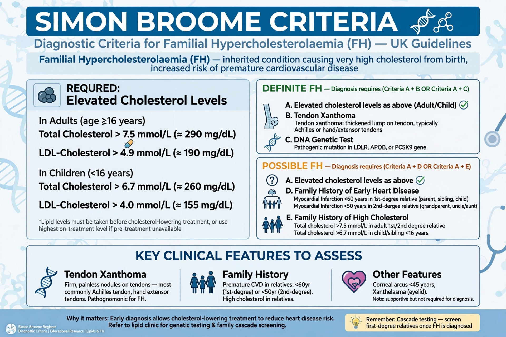

The Simon Broome criteria are a set of clinical criteria used in the United Kingdom to diagnose familial hypercholesterolaemia (FH), an inherited disorder of high cholesterol causing premature cardiovascular disease. They were developed from the Simon Broome Register of patients with FH.

Simon Broome criteriaA diagnosis of definite FH requires a total cholesterol above 7.5 mmol/L or LDL cholesterol above 4.9 mmol/L in an adult (lower thresholds in children), plus either tendon xanthomas in the patient or a first- or second-degree relative, or DNA evidence of a pathogenic mutation in LDLR, APOB or PCSK9.
Possible FH requires the cholesterol criterion plus a family history of myocardial infarction before age 50 in a second-degree relative or before 60 in a first-degree relative, or a family history of raised cholesterol.
The criteria guide cascade testing of relatives and early lipid-lowering treatment with statins, ezetimibe and PCSK9 inhibitors.